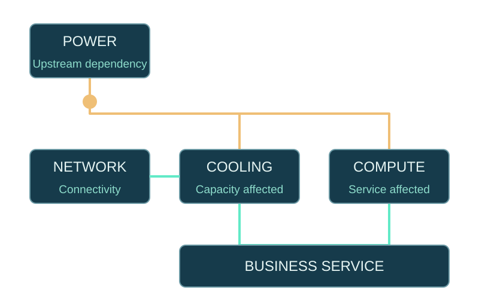
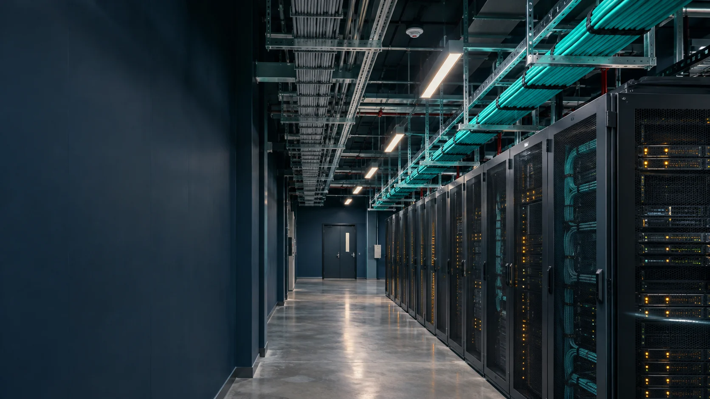

Energy & Utilities
Relate asset condition, network dependencies and maintenance context.
Connected infrastructureUnderstand the systems your services depend on.
The asset viewBring the physical infrastructure into focus.
A connected modelMap assets, data and operational dependencies.
Emerging issuesSee how one fault can affect other services.
Decision supportTrace the impact. Give engineers the context.
Resilience engineeringEvaluate alternative paths and recovery options.
Continuous intelligenceBring monitoring, review and response together.
A stronger foundationModernize in stages. Keep improving the whole.
Illustrative video only. Specific features depend on the agreed project scope.
 Cisco Catalyst Center
Cisco Catalyst CenterPlatform examples, not partnerships or completed integrations. Interfaces, permissions and compatibility are assessed for each project.

04 / Critical AI
Intelligent Infrastructure
Modernization & Resilience
Engineering intelligent, connected, and resilient infrastructure for the systems that modern economies depend on.
A connected infrastructure challenge
As data centers and AI infrastructure expand, their dependence on existing power, networks and cooling grows with them.
New capacity joins the network.
Potential weaknesses need attention.
Assess, strengthen and connect the supporting systems.
Illustrative scenario, not live infrastructure or incident data. Green connections represent proposed resilience work, not automatic fault resolution.
The challenge
A service may depend on power, cooling, networks, cloud platforms and operational systems. When these dependencies are recorded separately, the effect of a fault can be difficult to see.

The engineering lifecycle
01 / Infrastructure Assessment & Modernization

02 / AI-Powered Infrastructure Monitoring

03 / Predictive Failure & Risk Intelligence
04 / Digital Resilience & Redundancy Engineering
05 / Legacy Systems & Enterprise Integration
06 / Private AI Infrastructure
A controlled path forward
Start with the records and signals already available. Agree the access boundaries before connecting sources, then validate findings with the engineers who know the infrastructure.
Potential application domains
Target sectors for tailored projects—not a list of existing customers or completed deployments.
Relate asset condition, network dependencies and maintenance context.
Connect power, cooling, compute and service dependencies.
Understand how facilities, networks and operational systems support movement.
Bring equipment, operational records and plant services into one review context.
Link network visibility with the infrastructure supporting service delivery.
Map the systems and recovery dependencies behind business-critical services.
Three engagement stages
Deployment and support are tailored to the customer’s environment. Scope, responsibilities, commercial terms and any service levels are agreed in writing.
Expected value
Your infrastructure. A practical starting point.
Explore how Nordic Labs Tech Oy can help assess, modernize, and strengthen the resilience of your critical infrastructure.
A no-cost pilot may be available. Subject to mutual interest and a prior written agreement.
critical@nordiclabs.tech